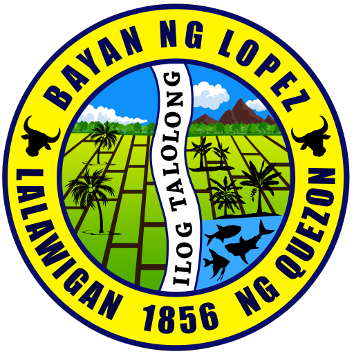

<!doctype html>
<html lang="en">
<head>
<meta charset="utf-8">
<title>District Assembly Overlay</title>
<!--
  OBS Browser Source, 1920 x 1080.
  ?scene=title             full-screen title card (one layer)
  ?scene=2|3|4&layer=bg    backdrop, goes UNDER camera/slides
  ?scene=2|3|4&layer=fg    frames + names, goes OVER camera/slides
  ?scene=5|6&layer=bg|fg   same layering
  2 = Presenter + Presentation, 3 = Presenter Only, 4 = Presentation Only, 5 = Camera Only (full-frame camera, glass pill with the district), 6 = Guest (same, with the guest name + position)
-->
<style>
@font-face{font-family:"DA Poppins";src:url("fonts/Poppins-Medium.ttf");font-weight:500}
@font-face{font-family:"DA Poppins";src:url("fonts/Poppins-Bold.ttf");font-weight:700}
@font-face{font-family:"DA Inter";src:url("fonts/Inter-Black.otf");font-weight:900}
:root{
  --red:#e8262c;--red-dark:#b0141a;--ink:#141416;--grey:#6e6e6e;
  --sans:"DA Poppins","Poppins","Segoe UI",Arial,sans-serif;
  --heavy:"DA Inter","Inter","Arial Black",sans-serif;
  --ease:cubic-bezier(.2,.8,.2,1);
}
*{box-sizing:border-box}
html,body{margin:0;width:1920px;height:1080px;overflow:hidden;background:transparent}
body{position:relative;font-family:var(--sans);color:var(--ink);-webkit-font-smoothing:antialiased}
body>*{position:absolute}
.fit{max-width:100%;overflow:hidden;white-space:nowrap}

/* ---------- backdrop ---------- */
.bg{left:0;top:0;width:1920px;height:1080px;background:linear-gradient(#f4f3f0,#e2e0dc)}
.stripes{left:0;top:0;width:1920px;height:1080px;
  background:repeating-linear-gradient(112.8deg,rgba(0,0,0,.035) 0 2px,transparent 2px 42px)}
.w1,.w2{left:0;top:0;width:1920px;height:1080px}
.w1{background:rgba(232,38,44,.16);clip-path:polygon(1250px 1080px,1920px 820px,1920px 1080px)}
.w2{background:rgba(232,38,44,.27);clip-path:polygon(1560px 1080px,1920px 930px,1920px 1080px)}
.hole{background:#1e1e20;box-shadow:0 12px 50px rgba(0,0,0,.36)}

/* ---------- header ---------- */
.band,.band-dark{left:0;top:22px;width:1920px;height:82px;background:var(--red)}
.band-dark{background:var(--red-dark);clip-path:polygon(1460px 0,1920px 0,1920px 82px,1420px 82px);transition:clip-path .55s var(--ease)}
.h-line{left:304px;color:#fff;font-weight:700;font-size:27px;letter-spacing:2px;line-height:33px;white-space:nowrap}
.event{right:40px;top:22px;height:82px;display:flex;align-items:center;color:#fff;
  font-family:var(--heavy);font-weight:900;font-size:30px;letter-spacing:4px;white-space:nowrap}

/* ---------- round logos ---------- */
.logo{border-radius:50%;background:#fff;box-shadow:0 10px 24px rgba(0,0,0,.28)}
.logo .inner{position:absolute;border-radius:50%;background:#ececec;overflow:hidden;display:flex;
  align-items:center;justify-content:center;text-align:center;color:#8c8c8c;font-weight:700;line-height:1.15}
.logo .inner::before{content:"";position:absolute;left:10px;top:10px;right:10px;bottom:10px;border:3px solid #bebebe;border-radius:50%}
.logo .ph{position:relative;white-space:pre-line}
.logo img{position:absolute;left:0;top:0;width:100%;height:100%;object-fit:cover;display:none;background:#fff}
.logo.has-img .inner{background:#fff}
.logo.has-img .inner::before,.logo.has-img .ph{display:none}
.logo.has-img img{display:block}

/* ---------- frames ---------- */
.frame{border:6px solid #fff}
.tab{background:var(--red)}

/* ---------- lower third ---------- */
.lt{left:40px;top:962px;width:1840px;height:90px;display:flex;filter:drop-shadow(0 8px 10px rgba(0,0,0,.22))}
.lt-tag{flex:none;height:90px;padding:0 66px 0 22px;background:var(--red);color:#fff;font-weight:700;font-size:22px;
  letter-spacing:3px;display:flex;align-items:center;white-space:nowrap;clip-path:polygon(0 0,100% 0,calc(100% - 22px) 100%,0 100%)}
.lt-plate{flex:1;min-width:0;margin-left:-18px;background:#fff;display:flex;align-items:center;padding:0 40px 0 52px;
  clip-path:polygon(22px 0,100% 0,100% 100%,0 100%)}
.lt-left{flex:1;min-width:0;display:flex;flex-direction:column;justify-content:center}
.lt-small{color:var(--red);font-weight:700;font-size:22px;letter-spacing:4px;line-height:24px;margin-top:2px}
.lt-name{font-family:var(--heavy);font-weight:900;font-size:50px;line-height:1.02}
.lt-div{flex:none;width:3px;height:54px;background:#d2d2d2;margin:0 30px}
.lt-right{flex:none;max-width:620px;text-align:right}
.lt-person{font-weight:700;font-size:34px;line-height:38px}
.lt-role{font-weight:500;font-size:21px;color:var(--grey);line-height:26px}

/* ---------- scene 3: presenter card ---------- */
.card{background:#fff;border-top:12px solid var(--red);padding:40px 30px 30px;box-shadow:0 10px 40px rgba(0,0,0,.33);
  display:flex;flex-direction:column;justify-content:flex-start}
.c-role{color:var(--red);font-weight:700;font-size:17px;letter-spacing:2px}
.c-prefix{margin-top:22px;font-weight:700;font-size:22px;letter-spacing:1px;color:var(--grey)}
.c-person{margin-top:2px;font-family:var(--heavy);font-weight:900;font-size:52px;line-height:1.08;overflow:hidden}
.c-brgy{font-weight:700;font-size:28px;line-height:1.2}
.c-word{font-family:var(--heavy);font-weight:900;font-size:64px;line-height:1.1}
.c-rule{width:60px;height:6px;background:var(--red);margin:22px 0 24px}
.c-dist{font-weight:500;font-size:20px;line-height:1.4;color:var(--grey);margin-top:6px}
.lt.no-person .lt-div,.lt.no-person .lt-right{display:none}

/* ---------- scene 4: side column ---------- */
.col{display:flex;flex-direction:column;align-items:center;text-align:center}
.pill{background:var(--red);color:#fff;font-weight:700;font-size:17px;letter-spacing:2px;padding:4px 12px}
.c4-small{margin-top:24px;color:var(--red);font-weight:700;font-size:20px;letter-spacing:3px}
.c4-name{margin-top:8px;width:100%;font-family:var(--heavy);font-weight:900;font-size:34px;line-height:1.15;overflow:hidden}
.c4-rule{width:60px;height:5px;background:var(--red);margin:18px 0 12px}
.c4-person{font-weight:700;font-size:22px;line-height:1.3}
.c4-role{font-weight:500;font-size:17px;color:var(--grey);margin-top:4px}

/* ---------- scene 5: camera only, glass pill ---------- */
/* OBS can't blur the camera behind a browser source, so the glass is faked:
   see-through tint + top sheen + bright rim. */
.cam5{left:0;top:0;width:1920px;height:1080px;background:#111}
.glass-row{left:0;bottom:56px;width:1920px;display:flex;justify-content:center}
.glass{height:92px;display:flex;align-items:center;gap:20px;padding:0 44px 0 14px;border-radius:46px;white-space:nowrap;color:#fff;
  background:linear-gradient(180deg,rgba(255,255,255,.30) 0%,rgba(255,255,255,.12) 48%,rgba(255,255,255,.06) 100%),rgba(28,28,32,.40);
  border:1.5px solid rgba(255,255,255,.42);
  box-shadow:inset 0 1.5px 0 rgba(255,255,255,.6),inset 0 -1px 0 rgba(255,255,255,.14),0 14px 44px rgba(0,0,0,.30);
  -webkit-backdrop-filter:blur(28px) saturate(1.6);backdrop-filter:blur(28px) saturate(1.6)}
.g-seals{display:flex}
.g-seals img{width:64px;height:64px;border-radius:50%;background:#fff;object-fit:cover;border:2px solid rgba(255,255,255,.9);
  box-shadow:0 3px 10px rgba(0,0,0,.25)}
.g-seals img+img{margin-left:-14px}
.g-seals img.g-dlogo{display:none}
.g-seals img.g-dlogo.on{display:block}
/* recording light: the dot breathes and a ring ripples out from it */
.g-dot{flex:none;position:relative;width:14px;height:14px;border-radius:50%;background:#ff3b30;
  box-shadow:0 0 10px 2px rgba(255,59,48,.75);animation:rec-blink 1.6s ease-in-out infinite}
.g-dot::after{content:"";position:absolute;inset:0;border-radius:50%;border:2px solid #ff3b30;
  animation:rec-ring 1.6s ease-out infinite}
@keyframes rec-blink{0%,100%{opacity:1;box-shadow:0 0 10px 2px rgba(255,59,48,.75)}50%{opacity:.35;box-shadow:0 0 0 0 rgba(255,59,48,0)}}
@keyframes rec-ring{0%{transform:scale(1);opacity:.9}100%{transform:scale(2.8);opacity:0}}
.g-text{font-weight:500;font-size:30px;letter-spacing:4px;text-shadow:0 1px 8px rgba(0,0,0,.35)}
.g-text b{font-weight:700}
/* scene 6: guest pill, name over position */
.glass.two{height:auto;min-height:92px;padding:12px 48px 12px 14px;border-radius:60px}
.g-guest{min-width:0;max-width:1450px;display:flex;flex-direction:column;justify-content:center;text-shadow:0 1px 8px rgba(0,0,0,.35)}
.g-name{font-weight:700;font-size:34px;line-height:1.15;letter-spacing:2px}
.g-name span{font-weight:500;margin-right:12px;color:rgba(255,255,255,.85)}
.g-pos{font-weight:500;font-size:22px;line-height:1.3;letter-spacing:1px;color:rgba(255,255,255,.88)}
.glass-row.empty{opacity:0}
/* guest pill "wave" style (coastal districts, e.g. Magnolia): sea-blue glass with two rolling waves along the bottom */
.g-wave{display:none}
.glass.wave{position:relative;overflow:hidden;padding-bottom:24px;border-color:rgba(190,240,250,.55);
  background:linear-gradient(180deg,rgba(255,255,255,.26) 0%,rgba(255,255,255,.08) 50%,rgba(255,255,255,.03) 100%),rgba(11,57,84,.52)}
.glass.wave>*:not(.g-wave):not(.g-boat){position:relative;z-index:1}
/* fisherman paddling a bangka across the wave, from left to right, behind the text */
.g-boat{display:none}
.glass.wave .g-boat{display:block;position:absolute;bottom:-4px;left:-120px;width:105px;height:75px;pointer-events:none;
  animation:sail 30s linear infinite}
.g-boat svg{display:block;width:100%;height:100%;overflow:visible}
.g-boat .hull{transform-box:view-box;transform-origin:70px 80px;animation:boat-bob 3.4s ease-in-out infinite}
.g-boat .paddle{transform-box:view-box;transform-origin:26px 50px;animation:paddle 1.8s ease-in-out infinite}
.g-boat .wake{animation:wake 1.2s ease-in-out infinite}
@keyframes sail{from{left:-120px}to{left:calc(100% + 10px)}}
@keyframes boat-bob{0%,100%{transform:translateY(0) rotate(-2.5deg)}50%{transform:translateY(2.5px) rotate(2.5deg)}}
@keyframes paddle{0%,100%{transform:rotate(-14deg)}50%{transform:rotate(16deg)}}
@keyframes wake{0%,100%{opacity:.85;transform:translateX(0)}50%{opacity:.35;transform:translateX(-4px)}}
.glass.wave:not(.two){height:106px;padding-bottom:18px}
.glass.wave .g-wave{display:block;position:absolute;left:0;right:0;bottom:0;pointer-events:none;background-repeat:repeat-x}
.glass.wave .g-wave.back{height:22px;background-size:180px 22px;animation:wave-l 9s linear infinite;
  background-image:url("data:image/svg+xml,%3Csvg xmlns='http://www.w3.org/2000/svg' width='120' height='16' viewBox='0 0 120 16' preserveAspectRatio='none'%3E%3Cpath d='M0 8 Q30 0 60 8 T120 8 V16 H0Z' fill='%230f8b8d' fill-opacity='.55'/%3E%3C/svg%3E")}
.glass.wave .g-wave.front{height:14px;background-size:120px 14px;animation:wave-r 5s linear infinite;
  background-image:url("data:image/svg+xml,%3Csvg xmlns='http://www.w3.org/2000/svg' width='120' height='16' viewBox='0 0 120 16' preserveAspectRatio='none'%3E%3Cpath d='M0 8 Q30 0 60 8 T120 8 V16 H0Z' fill='%235ad1e0' fill-opacity='.9'/%3E%3C/svg%3E")}
@keyframes wave-r{to{background-position-x:120px}}
@keyframes wave-l{to{background-position-x:-180px}}
/* fish that leap out of the wave now and then (wave style only). The layer is cut off at the
   waterline, so fish appear to come out of / dive back into the water. */
.g-wrap{position:relative}
.g-fish{position:absolute;left:0;right:0;top:-160px;bottom:9px;overflow:hidden;pointer-events:none;z-index:2}
.g-fish .fish{position:absolute;left:0;top:0;width:60px;height:30px;filter:drop-shadow(0 0 2px rgba(255,255,255,.55)) drop-shadow(0 3px 5px rgba(0,0,0,.45))}
.g-fish .drop{position:absolute;left:0;top:0;width:6px;height:6px;border-radius:50%;background:#bff3f8}
/* "coconut farm" style: green glass with a coconut palm rising from the right end. A farmer in a salakot
   hooks a coconut down with a karit on a bamboo pole (drawn on a canvas by cocoTick in the script). */
.co-tree{display:none}
.glass.coco{position:relative;overflow:visible;padding-right:150px;border-color:rgba(214,246,190,.55);
  background:linear-gradient(180deg,rgba(255,255,255,.26) 0%,rgba(255,255,255,.08) 50%,rgba(255,255,255,.03) 100%),rgba(22,74,36,.52)}
.glass.coco>*:not(.co-tree){position:relative;z-index:1}
.glass.coco .co-tree{display:block;position:absolute;right:-64px;bottom:-8px;width:200px;height:300px;z-index:2;pointer-events:none}
.co-tree canvas{display:block;width:100%;height:100%}

/* "name tag" style: a festive banner. A red-to-orange name bar over a cream position bar, with
   colorful Filipino-style geometric ornaments on both ends; the district logo sits in the left
   ornament, ringed by daisy petals. */
.tg-l,.tg-r,.tg-sun{display:none}
body.style-tag .glass-row{justify-content:flex-start;padding-left:200px;bottom:70px}
.glass.tag{position:relative;display:block;height:auto;min-height:0;padding:0;gap:0;border:0;border-radius:0;background:none;
  box-shadow:none;-webkit-backdrop-filter:none;backdrop-filter:none;filter:drop-shadow(0 10px 18px rgba(0,0,0,.4))}
.glass.tag .g-dot,.glass.tag .g-seals img:not(.g-dlogo){display:none}
.glass.tag .g-guest{position:relative;z-index:1;min-width:640px;max-width:1300px;align-items:stretch;text-shadow:none}
/* top bar: name */
.glass.tag .g-name,.glass.tag .g-text{position:relative;display:block;text-align:center;color:#fff;
  font-family:var(--sans);font-weight:700;text-transform:uppercase;letter-spacing:1.5px;line-height:1.2;
  padding:14px 150px 16px 120px;
  background:linear-gradient(90deg,#c8101c 0%,#e3262b 30%,#f2581f 70%,#f7941d 100%);
  clip-path:polygon(0 0,calc(100% - 34px) 0,100% 100%,0 100%);
  box-shadow:inset 0 -5px 0 #ffc629;text-shadow:0 2px 0 rgba(120,0,0,.35)}
.glass.tag .g-name span{font-weight:500;color:#fff;opacity:.9;margin-right:12px}
.glass.tag .g-text{font-size:40px;letter-spacing:2px}
.glass.tag .g-text b{font-weight:700}
/* bottom bar: position */
.glass.tag .g-pos{margin:0 70px 0 60px;padding:9px 60px 10px;text-align:center;color:#8e1016;
  font-weight:700;letter-spacing:1.5px;text-transform:uppercase;line-height:1.25;
  background:linear-gradient(180deg,#fff6e0 0%,#f3dfb4 100%);
  clip-path:polygon(0 0,100% 0,calc(100% - 22px) 100%,22px 100%)}
/* sun arcs inside the name bar, top right */
.glass.tag .tg-sun{display:block;position:absolute;right:46px;top:0;width:110px;height:62px;z-index:2;pointer-events:none;opacity:.95}
/* left ornament with the district logo; right tile cluster */
.glass.tag .tg-l{display:block;position:absolute;left:-150px;top:50%;width:190px;height:190px;margin-top:-100px;z-index:3;pointer-events:none}
.glass.tag .tg-r{display:block;position:absolute;right:-26px;bottom:-22px;width:118px;height:84px;z-index:3;pointer-events:none}
.tg-l svg,.tg-r svg,.tg-sun svg{display:block;width:100%;height:100%;overflow:visible}
.glass.tag .g-seals{position:absolute;left:-101px;top:50%;margin-top:-51px;z-index:4}
.glass.tag .g-seals img.g-dlogo{width:92px;height:92px;margin:0;border:4px solid #fff;object-fit:contain;padding:3px;
  box-shadow:0 3px 8px rgba(0,0,0,.35)}

/* ---------- title card ---------- */
.photo{left:0;top:0;width:1920px;height:1080px;background:url("assets/lopez_quezon.jpg") 60% 45%/cover no-repeat;
  transform-origin:72% 55%;animation:drift 36s ease-in-out infinite alternate}
@keyframes drift{from{transform:scale(1.03) translateX(0)}to{transform:scale(1.13) translateX(-30px)}}
.photo-tint{left:0;top:0;width:1920px;height:1080px;
  background:linear-gradient(200deg,rgba(176,20,26,0) 35%,rgba(176,20,26,.35) 100%),linear-gradient(180deg,rgba(0,0,0,.15),rgba(0,0,0,0) 30%,rgba(0,0,0,.35))}
.wash{left:0;top:0;width:1920px;height:1080px;clip-path:polygon(0 0,1290px 0,1050px 1080px,0 1080px);
  background:repeating-linear-gradient(112.8deg,rgba(0,0,0,.03) 0 2px,transparent 2px 42px),
             radial-gradient(ellipse 520px 260px at 0 100%,rgba(244,243,240,.75),rgba(244,243,240,0)),
             linear-gradient(90deg,rgba(244,243,240,.9) 0%,rgba(244,243,240,.8) 50%,rgba(236,234,230,.66) 100%)}
.edge{left:0;top:0;width:1920px;height:1080px;background:var(--red);clip-path:polygon(1290px 0,1318px 0,1078px 1080px,1050px 1080px)}
.edge2{left:0;top:0;width:1920px;height:1080px;background:rgba(255,255,255,.85);clip-path:polygon(1330px 0,1336px 0,1096px 1080px,1090px 1080px)}
.panel{left:0;top:0;width:1920px;height:1080px;
  background:repeating-linear-gradient(112.8deg,rgba(255,255,255,.07) 0 2px,transparent 2px 31px),linear-gradient(var(--red),var(--red-dark));
  clip-path:polygon(1290px 0,1920px 0,1920px 1080px,1050px 1080px)}
.plate{left:430px;top:470px;width:1030px;height:330px;background:#fff;border-bottom:12px solid var(--red);box-shadow:0 14px 48px rgba(0,0,0,.33)}
.ribbon{left:620px;top:406px;height:64px;padding:0 56px 0 30px;background:var(--ink);color:#fff;font-weight:700;font-size:30px;
  letter-spacing:4px;display:flex;align-items:center;white-space:nowrap;clip-path:polygon(0 0,100% 0,calc(100% - 26px) 100%,0 100%)}
.t-text{left:630px;top:470px;width:780px;height:318px;display:flex;flex-direction:column;justify-content:center}
.t-small{color:var(--red);font-weight:700;font-size:40px;letter-spacing:6px;line-height:1.1}
.t-name{font-family:var(--heavy);font-weight:900;font-size:104px;line-height:1.08;margin:4px 0 8px}
.t-person{font-weight:700;font-size:38px;line-height:1.2}
.t-role{font-weight:500;font-size:26px;color:var(--grey)}

/* ---------- animation ---------- */
.swap{transition:opacity .35s ease,transform .55s var(--ease)}
.swap.out{opacity:0;transform:translateY(22px)}
.logo.swap.out{transform:scale(.86)}
.lt{transition:opacity .4s ease,transform .6s var(--ease)}
.lt.out,.lt.hide{opacity:0;transform:translateX(-90px)}
</style>
</head>
<body>
<script>
"use strict";
const Q = new URLSearchParams(location.search);
const SCENE = (Q.get("scene") || "2").toLowerCase();
const LAYER = (Q.get("layer") || "fg").toLowerCase();

// Source boxes (x, y, w, h) - must match the OBS Edit Transform values.
const LAYOUT = {
  "2": {slide: [40, 135, 1440, 810], cam: [1520, 465, 360, 480]},
  "3": {cam: [40, 135, 1440, 810]},
  "4": {slide: [40, 135, 1600, 900]},
  "5": {cam: [0, 0, 1920, 1080]},   // full frame, no box
};

let state = {
  version: -1, show_lt: true,
  speaker: {kind: "barangay", district: "Poblacion", name: "Gomez", person: "Kgg. Juan Dela Cruz", role: "Punong Barangay", logo: ""},
  settings: {event_title: "DISTRICT ASSEMBLY", header1: "PROVINCE OF QUEZON", header2: "THE MUNICIPALITY OF LOPEZ",
             card_note: "Presentation of barangay and sectoral reports"},
};

/* ---------------- markup ---------------- */
const box = ([x, y, w, h]) => `left:${x}px;top:${y}px;width:${w}px;height:${h}px`;

function logoHTML(id, d, ring, x, y, phSize, swap) {
  return `<div class="logo${swap ? " swap" : ""}" id="${id}" style="${box([x, y, d, d])}">
    <div class="inner" style="left:${ring}px;top:${ring}px;right:${ring}px;bottom:${ring}px;font-size:${phSize}px">
      <span class="ph"></span></div></div>`;
}

function headerHTML() {
  return `<div class="band"></div><div class="band-dark"></div>
    ${logoHTML("seal1", 112, 6, 40, 7, 12)}${logoHTML("seal2", 112, 6, 166, 7, 12)}
    <div class="h-line" id="h1" style="top:31px"></div>
    <div class="h-line" id="h2" style="top:64px"></div>
    <div class="event" id="event"></div>`;
}

function backdropHTML() {
  return `<div class="bg"></div><div class="stripes"></div><div class="w1"></div><div class="w2"></div>`;
}

const ltHTML = (noPerson) => `<div class="lt${noPerson ? " no-person" : ""}" id="lt">
  <div class="lt-tag" id="lt-district"></div>
  <div class="lt-plate">
    <div class="lt-left"><div class="lt-small" id="lt-small"></div><div class="lt-name fit" id="lt-name"></div></div>
    <div class="lt-div"></div>
    <div class="lt-right"><div class="lt-person fit" id="lt-person"></div><div class="lt-role fit" id="lt-role"></div></div>
  </div></div>`;

const cardHTML = () => `<div class="card swap" style="${box([1520, 465, 360, 480])}">
  <div class="c-role fit" id="c-role"></div>
  <div class="c-prefix" id="c-prefix"></div><div class="c-person" id="c-person"></div>
  <div class="c-rule"></div></div>`;

const colHTML = () => `<div class="col swap" id="col" style="left:1671px;top:362px;width:224px">
  <div class="pill fit" id="c4-district"></div><div class="c4-small fit" id="c4-small"></div>
  <div class="c4-name" id="c4-name"></div><div class="c4-rule"></div>
  <div class="c4-person" id="c4-person"></div><div class="c4-role" id="c4-role"></div></div>`;

function build() {
  let h = "";
  if (SCENE === "5" || SCENE === "6") {
    // Camera fills the whole frame; the BG layer is only a dark fallback behind it.
    // 5 = district pill, 6 = guest pill (name + position).
    const seals = `<div class="g-seals"></div><span class="g-dot"></span>`;
    const body = SCENE === "5" ? `<span class="g-text" id="g-text"></span>`
      : `<div class="g-guest"><div class="g-name fit" id="g-name"></div><div class="g-pos fit" id="g-pos"></div></div>`;
    h = LAYER === "bg" ? `<div class="cam5"></div>` : `<div class="glass-row swap" id="g-row"><div class="g-wrap"><div class="glass${SCENE === "6" ? " two" : ""}" id="glass">${seals}${body}<i class="g-wave back"></i><div class="g-boat">${BOAT_SVG}</div><i class="g-wave front"></i><i class="tg-sun">${TAG_SUN_SVG}</i><i class="tg-l">${TAG_LEFT_SVG}</i><i class="tg-r">${TAG_RIGHT_SVG}</i><i class="co-tree">${COCO_HTML}</i></div><div class="g-fish" id="g-fish"></div></div></div>`;
    document.body.innerHTML = h;
    return;
  }
  if (SCENE === "title") {
    h += `<div class="bg"></div><div class="photo"></div><div class="photo-tint"></div><div class="wash"></div><div class="edge"></div><div class="edge2"></div>` + headerHTML();
    h += `<div class="plate"></div>` + logoHTML("logo", 430, 12, 150, 414, 48, true);
    h += `<div class="ribbon swap" id="t-district"></div>
      <div class="t-text swap"><div class="t-small" id="t-small"></div><div class="t-name fit" id="t-name"></div>
      <div class="t-person fit" id="t-person"></div><div class="t-role fit" id="t-role"></div></div>`;
  } else {
    const lay = LAYOUT[SCENE] || LAYOUT["2"];
    if (LAYER === "bg") {
      h += backdropHTML();
      for (const k of ["slide", "cam"]) if (lay[k]) h += `<div class="hole" style="${box(lay[k])}"></div>`;
      h += headerHTML();
    } else {
      for (const k of ["slide", "cam"]) if (lay[k]) {
        const [x, y, w, hh] = lay[k];
        h += `<div class="frame" style="${box([x - 6, y - 6, w + 12, hh + 12])}"></div>`;
      }
      if (SCENE === "2") {
        const [x, y] = lay.cam;
        h += `<div class="tab" style="${box([x - 6, y - 14, 96, 8])}"></div>`;
        h += logoHTML("logo", 250, 8, 1575, 169, 28, true) + ltHTML();
      } else if (SCENE === "3") {
        h += logoHTML("logo", 250, 8, 1575, 175, 28, true) + cardHTML() + ltHTML(true);
      } else if (SCENE === "4") {
        h += logoHTML("logo", 190, 8, 1688, 140, 22, true) + colHTML();
      }
    }
  }
  document.body.innerHTML = h;
}

/* ---------------- helpers ---------------- */
const $ = id => document.getElementById(id);
function T(id, txt) { const e = $(id); if (e) e.textContent = txt || ""; return e; }

function fitWidth(e, max, min) {
  if (!e) return;
  let s = max; e.style.fontSize = s + "px";
  while (e.scrollWidth > e.clientWidth + 1 && s > min) { s -= 1; e.style.fontSize = s + "px"; }
}
function fitBox(e, max, min, maxH) {
  if (!e) return;
  let s = max; e.style.fontSize = s + "px";
  while ((e.scrollHeight > maxH || e.scrollWidth > e.clientWidth + 1) && s > min) { s -= 1; e.style.fontSize = s + "px"; }
}

function logoUrl(p) {
  p = (p || "").trim().replace(/\\/g, "/");
  if (!p) return "";
  if (/^(https?:|data:)/i.test(p)) return p;
  if (!p.includes("/")) p = "logos/" + p;          // "gomez.png" -> logos/gomez.png
  return encodeURI(p);
}
function setLogo(id, src, ph) {
  const L = $(id); if (!L) return;
  L.querySelector(".ph").textContent = ph;
  const img = L.querySelector("img");
  if (!src) { L.classList.remove("has-img"); img.removeAttribute("src"); return; }
  img.onload = () => L.classList.add("has-img");
  img.onerror = () => L.classList.remove("has-img");
  if (img.getAttribute("src") !== src) img.src = src;
}

const isBrgy = sp => (sp.kind || "barangay").toLowerCase() === "barangay";
const muni = st => ((st.settings.header2 || "").replace(/^THE\s+/i, "") || "MUNICIPALITY").toUpperCase();
// Scene 5 district: the control panel's "Camera only" name if set, else the on-air speaker's district.
const camDistrict = st => ((st.settings || {}).cam_district || (st.speaker || {}).district || "").trim();
const eventTitle = st => st.settings.event_title;
// Scene 5 pill: "<b>MAGNOLIA</b> DISTRICT ASSEMBLY"; the event title when no district is set.
// District logo: logos/districts/<name>.png, e.g. "Ilang-Ilang" -> ilang_ilang.png. Hidden if the file is missing.
function setDistrictLogo(name) {
  const img = $("g-dlogo"); if (!img) return;
  const slug = name.toLowerCase().replace(/[^a-z0-9]+/g, "_").replace(/^_+|_+$/g, "");
  const src = slug ? "logos/districts/" + slug + ".png" : "";
  if (img.dataset.src === src) return;
  img.dataset.src = src;
  img.classList.remove("on");
  if (!src) { img.removeAttribute("src"); return; }
  img.onload = () => img.classList.add("on");
  img.onerror = () => img.classList.remove("on");
  img.src = src;
}
// Scene 6: "KGG. ATTY. ADRIAN DONALD L. SEGUI" over "Miyembro ng Sangguniang Bayan". Hidden when no guest is on air.
function setGuest(st) {
  const n = $("g-name"); if (!n) return;
  const g = st.guest || {};
  setDistrictLogo(camDistrict(st));   // same district as the Camera Only pill
  $("g-row").classList.toggle("empty", !g.name);
  n.textContent = "";
  if (g.title) { const t = document.createElement("span"); t.textContent = g.title; n.append(t); }
  n.append(g.name || "");
  const tag = (st.settings || {}).guest_style === "tag";   // the name tag uses bigger lettering
  fitWidth(n, tag ? 48 : 34, 20);
  fitWidth(T("g-pos", g.position), tag ? 26 : 22, 14);
}
function setPill(st) {
  const e = $("g-text"); if (!e) return;
  setDistrictLogo(camDistrict(st));
  const d = camDistrict(st).toUpperCase();
  e.textContent = "";
  if (!d) { e.textContent = eventTitle(st) || ""; return; }
  const b = document.createElement("b"); b.textContent = d;
  e.append(b, " DISTRICT ASSEMBLY");
}
// Widen the dark red header band so it always starts before the event title.
function fitBand() {
  const b = document.querySelector(".band-dark"), e = $("event");
  if (!b || !e) return;
  const range = document.createRange(); range.selectNodeContents(e);
  const textLeft = range.getBoundingClientRect().left;
  const x = Math.round(Math.min(1420, textLeft - 60));       // bottom-left corner of the slant
  b.style.clipPath = `polygon(${x + 40}px 0,1920px 0,1920px 82px,${x}px 82px)`;
}
function setEvent(st) { T("event", eventTitle(st)); fitBand(); }
const districtTag = (sp, st) => sp.district ? "DISTRICT " + sp.district.toUpperCase() : muni(st);
function labels(sp) {
  const b = isBrgy(sp);
  return {small: b ? "BARANGAY" : "SECTORAL GROUP",
          role: sp.role || (b ? "Punong Barangay" : "Sectoral President"),
          ph: b ? "BARANGAY\nLOGO" : "SECTOR\nLOGO"};
}

/* ---------------- render ---------------- */
function applySettings(st) {
  const s = st.settings;
  T("h1", s.header1); T("h2", s.header2); setEvent(st); setPill(st);
  // Pill style for both camera pills (scenes 5 and 6): "glass" (default), "wave", "tag" (festive name tag)
  // or "coco" (coconut farm). Stored as guest_style.
  if ($("glass")) {
    $("glass").classList.toggle("wave", s.guest_style === "wave");
    $("glass").classList.toggle("tag", s.guest_style === "tag");
    $("glass").classList.toggle("coco", s.guest_style === "coco");
    document.body.classList.toggle("style-tag", s.guest_style === "tag");
  }
  setLogo("seal1", "logos/province_seal.png", "PROVINCE\nSEAL");
  setLogo("seal2", "logos/municipal_seal.png", "MUNICIPAL\nSEAL");
}

function applySpeaker(st) {
  const sp = st.speaker || {}, lb = labels(sp);
  const NAME = (sp.name || "").toUpperCase(), tag = districtTag(sp, st);
  setLogo("logo", logoUrl(sp.logo), lb.ph);

  // lower third (scenes 2, 3)
  T("lt-district", tag); T("lt-small", lb.small);
  fitWidth(T("lt-person", sp.person), 34, 22);
  fitWidth(T("lt-role", lb.role), 21, 14);
  fitWidth(T("lt-name", NAME), 50, 24);

  // title card
  T("t-district", tag); T("t-small", lb.small);
  fitWidth(T("t-name", NAME), 104, 40);
  fitWidth(T("t-person", sp.person), 38, 22);
  fitWidth(T("t-role", lb.role), 26, 16);

  // scene 3 presenter card: title (Kgg./Gng./G.) small, name big
  const m = (sp.person || "").match(/^((?:Kgg|Kgd|Gng|Kap|Hon|Capt|G)\.)\s*(.*)$/i);
  T("c-role", lb.role.toUpperCase()); fitWidth($("c-role"), 17, 11);
  T("c-prefix", m ? m[1] : "");
  fitBox(T("c-person", m ? m[2] : sp.person), 52, 26, 260);
  fitWidth(T("c-brgy", isBrgy(sp) ? "Barangay " + (sp.name || "") : (sp.name || "")), 28, 16);
  fitWidth(T("c-dist", sp.district ? "District " + sp.district : muni(st).toLowerCase().replace(/\b\w/g, c => c.toUpperCase()).replace(/\bOf\b/, "of")), 20, 13);

  // scene 4 column
  fitWidth(T("c4-district", tag), 17, 11);
  fitWidth(T("c4-small", lb.small), 20, 12);
  fitBox(T("c4-name", NAME), 34, 18, 170);
  T("c4-person", sp.person); T("c4-role", lb.role);

  setPill(st); setGuest(st);
}

let lastSpeaker = null, lastSettings = null, first = true, synced = false;
function onState(st) {
  // Scene 5 only shows the district, so it animates only when that district changes
  // (cam_district is handled there too, so it fades like a speaker change).
  // Scene 6 follows the on-air guest (and the district, for its logo) instead of the speaker.
  const spKey = SCENE === "5" ? camDistrict(st) : SCENE === "6" ? JSON.stringify([st.guest || {}, camDistrict(st)]) : JSON.stringify(st.speaker);
  const setKey = JSON.stringify({...st.settings, cam_district: undefined});
  if (setKey !== lastSettings) { lastSettings = setKey; applySettings(st); if (!first && spKey === lastSpeaker) applySpeaker(st); }
  if (spKey !== lastSpeaker) {
    lastSpeaker = spKey;
    const parts = [...document.querySelectorAll(".swap, .lt")];
    if (first) applySpeaker(st);
    else {
      parts.forEach(e => e.classList.add("out"));
      setTimeout(() => { applySpeaker(st); requestAnimationFrame(() => parts.forEach(e => e.classList.remove("out"))); }, 400);
    }
  }
  const lt = $("lt"); if (lt) lt.classList.toggle("hide", st.show_lt === false);
  first = false;
}

async function poll() {
  try {
    const r = await fetch("/api/state", {cache: "no-store"});
    if (r.ok) {
      const st = await r.json();
      if (!synced) { synced = true; first = true; lastSpeaker = lastSettings = null; }  // no animation on first load
      if (st.version !== state.version) { state = st; onState(st); }
    }
  } catch (e) { /* server not running: keep showing the last state */ }
  setTimeout(poll, 300);
}

/* ---------------- jumping fish (wave style) ---------------- */
// Fisherman paddling a Filipino bangka to the right: blue/white/red hull with a green pinstripe,
// upswept bow and stern, blue arched outrigger arms and bamboo floats with orange tips. Waterline is y=80.
const BOAT_SVG = `<svg viewBox="0 0 140 100">
  <path class="wake" d="M8 80 L-14 78 M6 83 L-18 85 M4 78.5 L-6 75" stroke="#fff" stroke-width="1.6" stroke-linecap="round" fill="none"/>
  <g class="hull">
  <defs><clipPath id="bangka-hull"><path d="M6 54 Q18 62 34 62 L108 62 Q124 61 137 48 Q132 66 116 76 Q104 82 88 82 L44 82 Q22 81 12 70 Q8 63 6 54Z"/></clipPath></defs>
  <path d="M4 78 L136 78" stroke="#d9a45a" stroke-width="3.6" stroke-linecap="round"/>
  <path d="M4 78 L13 78 M127 78 L136 78" stroke="#e8552c" stroke-width="4" stroke-linecap="round"/>
  <g clip-path="url(#bangka-hull)">
    <rect x="0" y="40" width="140" height="26" fill="#1f78c8"/><rect x="0" y="65.2" width="140" height="1.3" fill="#3cc06b"/>
    <rect x="0" y="66.5" width="140" height="4.8" fill="#f4f4f2"/><rect x="0" y="71.3" width="140" height="15" fill="#b3202a"/></g>
  <path d="M6 54 Q18 62 34 62 L108 62 Q124 61 137 48 Q132 66 116 76 Q104 82 88 82 L44 82 Q22 81 12 70 Q8 63 6 54Z" fill="none" stroke="#0b2a40" stroke-opacity=".55" stroke-width=".9"/>
  <path d="M30 61 Q26 40 10 79 M112 61 Q116 40 130 79 M58 61 Q56 46 46 79 M86 61 Q88 46 98 79" stroke="#2f8fd0" stroke-width="2.8" fill="none" stroke-linecap="round"/>
  <path d="M20 51 Q70 45 120 51" stroke="#2f8fd0" stroke-width="2.2" fill="none" stroke-linecap="round"/>
  <path d="M28 62 L28 56 Q36 53 44 56 L44 62Z" fill="#23395b"/>
  <path d="M31 56 Q30 43 36 41 Q42 43 41 56Z" fill="#f2c14e"/>
  <circle cx="36" cy="36" r="5" fill="#b9784a"/>
  <path d="M23 35 L36 24 L49 35 Q36 38.5 23 35Z" fill="#e2bf6e" stroke="#8a6a2e" stroke-width="1"/>
  <g class="paddle"><path d="M34 46 L26 50" stroke="#b9784a" stroke-width="3.2" stroke-linecap="round"/>
    <path d="M28 42 L18 86" stroke="#5b3a22" stroke-width="2.2" stroke-linecap="round"/>
    <ellipse cx="17.5" cy="87" rx="3" ry="6" fill="#5b3a22" transform="rotate(13 17.5 87)"/></g>
  <path d="M2 82.5 L138 82.5" stroke="#d9a45a" stroke-width="4" stroke-linecap="round"/>
  <path d="M2 82.5 L12 82.5 M128 82.5 L138 82.5" stroke="#e8552c" stroke-width="4.4" stroke-linecap="round"/>
</g></svg>`;
const FISH_SVG = `<svg viewBox="0 0 40 20" width="60" height="30"><path d="M38 10 Q28 1 14 6 L2 1 L6 10 L2 19 L14 14 Q28 19 38 10Z" fill="#7fe3ee" stroke="#0b3954" stroke-width="1.3" stroke-linejoin="round"/>
  <path d="M38 10 Q28 15 14 13" stroke="#0f8b8d" stroke-opacity=".5" fill="none" stroke-width="1.5"/>
  <path d="M27 6 Q22 10 27 14" stroke="#fff" stroke-opacity=".7" fill="none" stroke-width="1.2"/><circle cx="32" cy="8.5" r="1.5" fill="#0b3954"/></svg>`;

/* ---------------- name tag ornaments ---------------- */
// Left: eight daisy petals in blue / yellow / red / green around the round district logo (center 95,95),
// with white diamonds between them and a small checker block and sparkle below.
const TAG_LEFT_SVG = (() => {
  const C = ["#1d4fb8", "#f6b61b", "#e3262b", "#1f9a55"];
  let s = `<svg viewBox="0 0 190 190">`;
  for (let k = 0; k < 8; k++)
    s += `<path d="M95 95 C68 70 72 16 95 12 C118 16 122 70 95 95Z" fill="${C[k % 4]}" stroke="#fff" stroke-width="3" transform="rotate(${k * 45} 95 95)"/>`;
  for (let k = 0; k < 8; k++)
    s += `<path d="M95 8 l5 8 l-5 8 l-5 -8Z" fill="#fff" transform="rotate(${k * 45 + 22.5} 95 95)"/>`;
  s += `<g transform="translate(18 146)">`;
  const sq = [["#1d4fb8", 0, 0], ["#fff", 12, 0], ["#1d4fb8", 24, 0], ["#fff", 0, 12], ["#f6b61b", 12, 12], ["#fff", 24, 12]];
  for (const [f, x, y] of sq) s += `<rect x="${x}" y="${y}" width="12" height="12" fill="${f}"/>`;
  s += `</g><path d="M160 150 Q162 160 172 162 Q162 164 160 174 Q158 164 148 162 Q158 160 160 150Z" fill="#fff"/>`;
  return s + `</svg>`;
})();
// Right: a red / white woven "X" diamond with blue-and-white checks and a yellow triangle.
const TAG_RIGHT_SVG = `<svg viewBox="0 0 118 84">
  <path d="M8 84 L30 30 L52 84Z" fill="#f6b61b" stroke="#fff" stroke-width="2"/>
  <path d="M40 42 L64 4 L88 42 L64 80Z" fill="#e3262b" stroke="#fff" stroke-width="2.5"/>
  <path d="M52 23 L76 61 M76 23 L52 61" stroke="#fff" stroke-width="5" stroke-linecap="round"/>
  <path d="M64 30 L70 42 L64 54 L58 42Z" fill="#1d4fb8"/>
  <g>${[[90,30,"#1d4fb8"],[102,30,"#fff"],[90,42,"#fff"],[102,42,"#1f9a55"],[90,54,"#1d4fb8"],[102,54,"#fff"],[90,66,"#fff"],[102,66,"#1d4fb8"]]
    .map(([x, y, f]) => `<rect x="${x}" y="${y}" width="12" height="12" fill="${f}" stroke="#fff" stroke-width=".8"/>`).join("")}</g>
</svg>`;
// Sun arcs: concentric half circles rising from the top edge of the name bar.
const TAG_SUN_SVG = `<svg viewBox="0 0 110 62">${[52, 40, 28, 16].map((r, i) =>
  `<path d="M${55 - r} 0 A${r} ${r} 0 0 0 ${55 + r} 0" fill="none" stroke="${i % 2 ? "#e3262b" : "#ffc629"}" stroke-width="6"/>`).join("")}
  <circle cx="55" cy="0" r="7" fill="#ffc629"/></svg>`;

/* ---------------- coconut farm (coco style) ---------------- */
// Drawn on a canvas every frame, in the cartoon style of the stick-figure animation skill
// (ink outlines, a big white head, a bean torso, two-bone IK limbs, comic impact bursts and dust puffs).
// Canvas units are CSS px in a 200x300 box. The trunk is a curve from its base (78,296) up to the crown (120,66).
// A farmer stands at the foot of the tree with a long bamboo pole tipped with a karit (sickle). He raises it,
// hooks a coconut's stem, tugs twice and it drops: it bursts on the ground, bounces and rolls away, he grins,
// lowers the pole, and a new coconut pops back onto the tree before the next harvest.
const COCO_HTML = `<canvas width="400" height="600"></canvas>`;
const CO = {cycle: 14500, raise: [1200, 3000], search: [3000, 3600], tug1: [3700, 4250], tug2: [4400, 4950], drop: 4800};
CO.hit = CO.drop + 620;                                   // the coconut lands on his head
CO.shake = [CO.hit + 2300, CO.hit + 2700];                // he shakes off the dizziness
CO.getup = [CO.hit + 2600, CO.hit + 3200];                // and gets back up
CO.regrow = CO.drop + 7500;                               // a new coconut pops back onto the tree
const CO_HEADTOP = [27, 212];                             // where the coconut hits (top of his salakot)
const CI = "#221c22";                       // ink, as in the stick-figure skill
const clamp01 = x => x < 0 ? 0 : x > 1 ? 1 : x;
const ease = x => { x = clamp01(x); return x * x * (3 - 2 * x); };
const easeIn = x => { x = clamp01(x); return x * x; };
const backOut = x => { x = clamp01(x); const c = 1.9; return 1 + (c + 1) * Math.pow(x - 1, 3) + c * Math.pow(x - 1, 2); };
const mix = (a, b, t) => a + (b - a) * t;
const inSpan = (t, [a, b]) => clamp01((t - a) / (b - a));
const bump = (t, span) => { const v = inSpan(t, span); return v > 0 && v < 1 ? Math.sin(Math.PI * v) : 0; };

// trunk: arc-length table of the curve. coAt(s) gives the point s px up the trunk, the unit tangent (pointing up)
// and the left normal.
const CO_LUT = (() => {
  const P = [[78, 296], [80, 214], [92, 134], [120, 66]], pts = [];
  let len = 0, prev = null;
  for (let i = 0; i <= 240; i++) {
    const t = i / 240, m = 1 - t, b = [m * m * m, 3 * m * m * t, 3 * m * t * t, t * t * t];
    const x = b.reduce((a, k, j) => a + k * P[j][0], 0), y = b.reduce((a, k, j) => a + k * P[j][1], 0);
    if (prev) len += Math.hypot(x - prev[0], y - prev[1]);
    pts.push([x, y, len]); prev = [x, y];
  }
  return pts;
})();
const CO_L = CO_LUT[CO_LUT.length - 1][2];
function coAt(s) {
  s = Math.max(0, Math.min(CO_L, s));
  let i = 1; while (i < CO_LUT.length - 1 && CO_LUT[i][2] < s) i++;
  const a = CO_LUT[i - 1], b = CO_LUT[i], f = (s - a[2]) / ((b[2] - a[2]) || 1);
  const tx = b[0] - a[0], ty = b[1] - a[1], n = Math.hypot(tx, ty) || 1;
  return {x: mix(a[0], b[0], f), y: mix(a[1], b[1], f), tx: tx / n, ty: ty / n, lx: ty / n, ly: -tx / n};
}
const coPt = (s, u) => { const a = coAt(s); return [a.x + a.lx * u, a.y + a.ly * u]; };
const coHW = s => 8 - 2.6 * Math.max(0, Math.min(CO_L, s)) / CO_L;     // trunk half-width, thinner at the top
const coNutHome = () => coPt(CO_L - 16, 9);

// two-bone IK: returns [joint, end], with the joint on the side of `pref`
function coIK(S, T, l1, l2, pref) {
  const dx = T[0] - S[0], dy = T[1] - S[1], d = Math.hypot(dx, dy) || .01;
  const dd = Math.max(Math.abs(l1 - l2) + .01, Math.min(l1 + l2 - .01, d));
  const base = Math.atan2(dy, dx), a = Math.acos(Math.max(-1, Math.min(1, (l1 * l1 + dd * dd - l2 * l2) / (2 * l1 * dd))));
  const e1 = [S[0] + Math.cos(base + a) * l1, S[1] + Math.sin(base + a) * l1];
  const e2 = [S[0] + Math.cos(base - a) * l1, S[1] + Math.sin(base - a) * l1];
  const dot = e => (e[0] - S[0]) * pref[0] + (e[1] - S[1]) * pref[1];
  return [dot(e1) >= dot(e2) ? e1 : e2, [S[0] + Math.cos(base) * dd, S[1] + Math.sin(base) * dd]];
}

/* drawing helpers */
function coInk(ctx, fill, lw = 1.5) { if (fill) { ctx.fillStyle = fill; ctx.fill(); } ctx.lineWidth = lw; ctx.strokeStyle = CI; ctx.stroke(); }
function coCircle(ctx, x, y, r) { ctx.beginPath(); ctx.arc(x, y, Math.max(.01, r), 0, Math.PI * 2); }
function coLimbLine(ctx, a, b, c, col, lw) {
  ctx.beginPath(); ctx.moveTo(a[0], a[1]); ctx.lineTo(b[0], b[1]); ctx.lineTo(c[0], c[1]);
  ctx.lineWidth = lw; ctx.strokeStyle = col; ctx.stroke();
}
function coNut(ctx, x, y, rot = 0, sx = 1, sy = 1, alpha = 1, r = 6.5) {
  if (alpha <= 0) return;
  ctx.save(); ctx.globalAlpha = alpha; ctx.translate(x, y); ctx.scale(sx, sy); ctx.rotate(rot);
  coCircle(ctx, 0, 0, r); coInk(ctx, "#7c9a2a", 1.4);
  ctx.beginPath(); ctx.arc(0, 0, r - .7, -2.4, -.7); ctx.lineTo(0, -r * .3); ctx.closePath(); ctx.fillStyle = "#8a5a2b"; ctx.fill();   // husk cap
  ctx.beginPath(); ctx.ellipse(-r * .35, r * .15, r * .26, r * .15, -.6, 0, Math.PI * 2); ctx.fillStyle = "rgba(255,255,255,.5)"; ctx.fill();
  ctx.restore();
}
function coFrond(ctx, cx, cy, ang, len, col) {
  const left = Math.cos(ang * Math.PI / 180) < 0;
  ctx.save(); ctx.translate(cx, cy); ctx.rotate(ang * Math.PI / 180); if (left) ctx.scale(1, -1);
  const sp = t => { const m = 1 - t; return [2 * m * t * len * .5 + t * t * len, 2 * m * t * -len * .32 + t * t * len * .14]; };
  const top = [], bot = [];
  for (let k = 0; k <= 16; k++) {
    const t = k / 16, p = sp(t), q = sp(Math.min(1, t + .01)), p0 = sp(Math.max(0, t - .01));
    let nx = -(q[1] - p0[1]), ny = q[0] - p0[0]; const n = Math.hypot(nx, ny) || 1; nx /= n; ny /= n;
    const notch = t > .15 && k % 2 ? .5 : 1, wd = 7 * Math.sin(Math.PI * Math.pow(t, .8)) * (1 - .25 * t) * notch;
    top.push([p[0] + nx * wd, p[1] + ny * wd]); bot.push([p[0] - nx * wd * .8, p[1] - ny * wd * .8]);
  }
  ctx.beginPath(); top.forEach((p, k) => k ? ctx.lineTo(p[0], p[1]) : ctx.moveTo(p[0], p[1]));
  for (let k = bot.length - 1; k >= 0; k--) ctx.lineTo(bot[k][0], bot[k][1]);
  ctx.closePath(); coInk(ctx, col, 1.3);
  ctx.beginPath(); for (let k = 0; k <= 12; k++) { const p = sp(k / 12 * .95); k ? ctx.lineTo(p[0], p[1]) : ctx.moveTo(p[0], p[1]); }
  ctx.lineWidth = 1; ctx.strokeStyle = "#24733d"; ctx.stroke();
  ctx.restore();
}
function coBurst(ctx, x, y, r, alpha) {             // comic impact star
  if (alpha <= 0 || r <= .5) return;
  ctx.save(); ctx.globalAlpha = alpha; ctx.beginPath();
  for (let k = 0; k < 18; k++) {
    const a = k / 18 * Math.PI * 2 - .2, rr = k % 2 ? r * .5 : r * (.85 + .3 * ((k * 37) % 7) / 7);
    const px = x + Math.cos(a) * rr, py = y + Math.sin(a) * rr * .75;
    k ? ctx.lineTo(px, py) : ctx.moveTo(px, py);
  }
  ctx.closePath(); coInk(ctx, "#ffd23a", 1.4); ctx.restore();
}
function coDust(ctx, x, y, v) {                     // dust puff, v = 0..1 through its life
  if (v <= 0 || v >= 1) return;
  ctx.save(); ctx.globalAlpha = 1 - v;
  for (let k = 0; k < 5; k++) {
    const a = Math.PI + k / 4 * Math.PI, d = 4 + 14 * (1 - (1 - v) * (1 - v));
    coCircle(ctx, x + Math.cos(a) * d * 1.2, y + Math.sin(a) * d * .45 - 6 * v, 3.2 + 2.2 * Math.sin(Math.PI * v) - k % 2);
    coInk(ctx, "#efe3c6", 1);
  }
  ctx.restore();
}
// bamboo pole from a to b with a karit (sickle) hooked at b, its blade curving to the right
function coPole(ctx, a, b) {
  const dx = b[0] - a[0], dy = b[1] - a[1], L = Math.hypot(dx, dy) || 1, ux = dx / L, uy = dy / L, rx = -uy, ry = ux;
  ctx.beginPath(); ctx.moveTo(a[0], a[1]); ctx.lineTo(b[0], b[1]); ctx.lineWidth = 4.2; ctx.strokeStyle = CI; ctx.stroke();
  ctx.lineWidth = 2.2; ctx.strokeStyle = "#d9b25c"; ctx.stroke();
  for (let s = 14; s < L - 6; s += 24) {           // bamboo nodes
    const p = [a[0] + ux * s, a[1] + uy * s];
    ctx.beginPath(); ctx.moveTo(p[0] - rx * 2.2, p[1] - ry * 2.2); ctx.lineTo(p[0] + rx * 2.2, p[1] + ry * 2.2); ctx.lineWidth = 1.1; ctx.strokeStyle = "#8a6a2e"; ctx.stroke();
  }
  // blade: a crescent leaving the tip, arcing up and over to the right, its point hanging back down
  const P = (f, r) => [b[0] + ux * f + rx * -r, b[1] + uy * f + ry * -r];
  const o0 = P(0, 0), o1 = P(9, -1), o2 = P(12, -9), o3 = P(5, -14), i1 = P(7, -3), i2 = P(8, -9);
  ctx.beginPath(); ctx.moveTo(o0[0], o0[1]); ctx.bezierCurveTo(o1[0], o1[1], o2[0], o2[1], o3[0], o3[1]);
  ctx.bezierCurveTo(i2[0], i2[1], i1[0], i1[1], P(-1, -1.5)[0], P(-1, -1.5)[1]); ctx.closePath(); coInk(ctx, "#cfd8de", 1.2);
  const h = P(-2, 0), h2 = P(4, 0);                // lashing that ties the blade to the pole
  ctx.beginPath(); ctx.moveTo(h[0], h[1]); ctx.lineTo(h2[0], h2[1]); ctx.lineWidth = 3.6; ctx.strokeStyle = "#7a4a22"; ctx.stroke();
}

/* the farmer: a stick-figure rig standing left of the tree, facing it */
function coHead(ctx, x, y, ang, face, T) {
  const hr = 10.5;
  ctx.save(); ctx.translate(x, y); ctx.rotate(ang);
  if (face.squash) ctx.scale(2 - face.squash, face.squash);   // squashed by the bonk
  coCircle(ctx, 0, 0, hr); ctx.fillStyle = "#f6f2ea"; ctx.fill();
  ctx.save(); coCircle(ctx, 0, 0, hr); ctx.clip();
  ctx.beginPath(); ctx.arc(0, 0, hr + 1, 0, Math.PI * 2); ctx.arc(3, 2.5, hr, 0, Math.PI * 2, true); ctx.fillStyle = "#dcd5ca"; ctx.fill();
  ctx.restore();
  coCircle(ctx, 0, 0, hr); coInk(ctx, null, 1.5);
  ctx.beginPath(); ctx.ellipse(-6.5, 3.5, 2, 1.1, 0, 0, Math.PI * 2); ctx.fillStyle = "rgba(240,120,120,.35)"; ctx.fill();   // blush
  const blink = (T % 3300) < 110;
  for (const ex of [1.5, 6.8]) {
    if (face.eyes === "happy") { ctx.beginPath(); ctx.arc(ex, .8, 2.2, Math.PI * 1.1, Math.PI * 1.9); ctx.lineWidth = 1.3; ctx.strokeStyle = CI; ctx.stroke(); continue; }
    if (face.eyes === "squeeze") {                     // > <
      const sd = ex < 5 ? 1 : -1; ctx.beginPath(); ctx.moveTo(ex - 2 * sd, -2.6); ctx.lineTo(ex + 1.8 * sd, -.5); ctx.lineTo(ex - 2 * sd, 1.6);
      ctx.lineWidth = 1.3; ctx.strokeStyle = CI; ctx.stroke(); continue;
    }
    if (face.eyes === "spiral") {                      // dizzy spirals, spinning
      ctx.beginPath(); const spin = T / 90 * (ex < 5 ? 1 : -1);
      for (let a = 0; a < 13; a += .3) { const rr = .2 + a * .2, px = ex + Math.cos(a + spin) * rr, py = -.5 + Math.sin(a + spin) * rr; a ? ctx.lineTo(px, py) : ctx.moveTo(px, py); }
      ctx.lineWidth = .8; ctx.strokeStyle = CI; ctx.stroke(); continue;
    }
    if (blink) { ctx.beginPath(); ctx.moveTo(ex - 2.4, -.5); ctx.lineTo(ex + 2.4, -.5); ctx.lineWidth = 1.2; ctx.strokeStyle = CI; ctx.stroke(); continue; }
    ctx.beginPath(); ctx.ellipse(ex, -.5, 2.6, 2.6, 0, 0, Math.PI * 2); coInk(ctx, "#fff", 1.1);
    coCircle(ctx, ex + face.look[0] * 1.1, -.5 + face.look[1] * 1.1, 1.25); ctx.fillStyle = CI; ctx.fill();
  }
  ctx.lineWidth = 1.2; ctx.strokeStyle = CI;
  for (const ex of [1.5, 6.8]) { const by = -4.6 - (face.brow || 0); ctx.beginPath(); ctx.moveTo(ex - 2.3, by + (ex < 5 ? .5 : -.2)); ctx.lineTo(ex + 2.2, by); ctx.stroke(); }
  if (face.mouth === "grin") { ctx.beginPath(); ctx.moveTo(1, 4.2); ctx.quadraticCurveTo(4.5, 5, 8, 4); ctx.quadraticCurveTo(5, 9.5, 1, 4.2); coInk(ctx, "#7a2630", 1.1); }
  else if (face.mouth === "o") { ctx.beginPath(); ctx.ellipse(4.5, 5.6, 1.3, 1.7, 0, 0, Math.PI * 2); coInk(ctx, "#5a1e24", 1); }
  else if (face.mouth === "grit") { ctx.beginPath(); ctx.roundRect(1.8, 4.2, 5.4, 2.6, 1); coInk(ctx, "#fff", 1); ctx.beginPath(); ctx.moveTo(1.8, 5.5); ctx.lineTo(7.2, 5.5); ctx.lineWidth = .7; ctx.stroke(); }
  else if (face.mouth === "smile") { ctx.beginPath(); ctx.arc(4.5, 2.6, 3, .5, Math.PI - .5); ctx.stroke(); }
  else if (face.mouth === "wavy") { ctx.beginPath(); for (let k = 0; k <= 6; k++) { const px = 1.5 + k, py = 5.3 + (k % 2 ? -.9 : .9); k ? ctx.lineTo(px, py) : ctx.moveTo(px, py); } ctx.lineWidth = 1; ctx.stroke(); }
  else { ctx.beginPath(); ctx.moveTo(2.5, 5.4); ctx.lineTo(6.5, 5.1); ctx.stroke(); }
  // salakot (pops off his head on the bonk)
  ctx.save(); if (face.hat) { ctx.translate(face.hat[0], face.hat[1]); ctx.rotate(face.hat[2]); }
  ctx.beginPath(); ctx.moveTo(-15, -5.5); ctx.quadraticCurveTo(-7, -13, -1, -17.5); ctx.quadraticCurveTo(6, -13, 14, -5.5);
  ctx.quadraticCurveTo(0, -3, -15, -5.5); ctx.closePath(); coInk(ctx, "#e8c56f", 1.4);
  ctx.beginPath(); ctx.moveTo(-9, -9.8); ctx.quadraticCurveTo(-1, -8, 8, -9.8); ctx.lineWidth = 1; ctx.strokeStyle = "#a9772f"; ctx.stroke();
  coCircle(ctx, -1, -17.5, 1.3); ctx.fillStyle = CI; ctx.fill();
  ctx.restore();
  if (face.sweat != null) {                          // a sweat drop slides off the back of his head
    const v = face.sweat, sx = -11.5, sy = -3 + 9 * v, s = 2.6;
    ctx.save(); ctx.globalAlpha = 1 - v; ctx.beginPath(); ctx.moveTo(sx, sy - s); ctx.quadraticCurveTo(sx + s * .7, sy, sx, sy + s * .6);
    ctx.quadraticCurveTo(sx - s * .7, sy, sx, sy - s); coInk(ctx, "#8fd8ff", .8); ctx.restore();
  }
  ctx.restore();
}
function coFarmer(ctx, t, T, pull, recoil, face, hookTarget) {
  const rot = (p, a) => [p[0] * Math.cos(a) - p[1] * Math.sin(a), p[0] * Math.sin(a) + p[1] * Math.cos(a)];
  const add = (a, b) => [a[0] + b[0], a[1] + b[1]];
  // stance: feet planted, hips sink and lean back on each tug. sit (0..1) drops him onto the ground with his
  // legs out in front; dizzy (0..1) makes his body circle woozily.
  const sit = face.sit || 0, dz = face.dizzy || 0;
  const footB = [mix(18, 44, sit), mix(296, 295, sit)], footF = [mix(40, 55, sit), mix(295, 294, sit)];
  const breathe = Math.sin(T / 650) * .6;
  const tilt = -.2 * pull + .05 * recoil + dz * .2 * Math.sin(T / 190) - .08 * sit;   // lean back as he tugs; wobble when dizzy
  const hip = [30 - 3 * pull + 3 * sit, mix(268, 287, sit) + breathe + 2.5 * pull];
  const sh = add(hip, rot([0, -21], tilt)), head = add(sh, rot([1.5, -14], tilt));
  // the pole: its butt rides at his belly; raising swings it from resting against his shoulder up to the coconut.
  // When he's dizzy it sways loosely in his hands, lagging behind his wobble.
  const r = face.raise, butt = add(hip, rot([12, 9], tilt * .5));
  const restAng = .1, aim = Math.atan2(hookTarget[0] - butt[0], butt[1] - hookTarget[1]);
  const ang = mix(restAng, aim, r) + (face.wiggle || 0) + dz * .28 * Math.sin(T / 190 - .7);
  const len = mix(178, Math.hypot(hookTarget[0] - butt[0], hookTarget[1] - butt[1]), r) - 7 * pull;
  const dir = [Math.sin(ang), -Math.cos(ang)], tip = add(butt, [dir[0] * len, dir[1] * len]);
  const handLo = add(butt, [dir[0] * 6, dir[1] * 6]), handHi = add(butt, [dir[0] * (21 - 3 * r), dir[1] * (21 - 3 * r)]);
  // shadow, far arm (to the low hand), legs, shorts
  ctx.beginPath(); ctx.ellipse(29 + 10 * sit, 297, 18 + 6 * sit, 2.8, 0, 0, Math.PI * 2); ctx.fillStyle = "rgba(20,30,20,.28)"; ctx.fill();
  let [j, e] = coIK(sh, handLo, 13.5, 13.5, [-.4, 1]); coLimbLine(ctx, sh, j, e, "#4b4049", 2.6);
  for (const [f, col] of [[footB, "#4b4049"], [footF, CI]]) {
    [j, e] = coIK(hip, f, 14.5, 14.5, [mix(1, .2, sit), mix(-.2, -1, sit)]);   // knees forward standing, up when sitting
    coLimbLine(ctx, hip, j, e, col, col === CI ? 3 : 2.7);
    ctx.beginPath(); ctx.ellipse(e[0] + 2.5, e[1] - 1, 3.6, 2, 0, 0, Math.PI * 2); ctx.fillStyle = col; ctx.fill();
  }
  coCircle(ctx, hip[0], hip[1], 5.6); coInk(ctx, "#2a3f8f", 1.4);
  // striped bean torso
  const len2 = Math.hypot(sh[0] - hip[0], sh[1] - hip[1]);
  ctx.save(); ctx.translate((hip[0] + sh[0]) / 2, (hip[1] + sh[1]) / 2); ctx.rotate(tilt);
  const bean = () => { ctx.beginPath(); ctx.roundRect(-6.5, -len2 / 2 - 4, 13, len2 + 8, 6.5); };
  bean(); ctx.fillStyle = "#2f63c9"; ctx.fill();
  ctx.save(); bean(); ctx.clip(); ctx.fillStyle = "#f6f1e8";
  for (let k = 0; k < 6; k++) ctx.fillRect(-8, -len2 / 2 - 2 + k * 6, 16, 2.6);
  ctx.fillStyle = "rgba(0,0,0,.16)"; ctx.fillRect(1.5, -len2, 8, len2 * 2); ctx.restore();
  bean(); coInk(ctx, null, 1.5); ctx.restore();
  coHead(ctx, head[0], head[1], tilt + (face.headTilt || 0), face, T);
  // the pole, then the near arm gripping it high
  coPole(ctx, add(butt, [-dir[0] * 9, -dir[1] * 9]), tip);
  [j, e] = coIK(sh, handHi, 13.5, 13.5, [.3, 1]); coLimbLine(ctx, sh, j, e, CI, 3);
  for (const h of [handLo, handHi]) { coCircle(ctx, h[0], h[1], 2.4); ctx.fillStyle = CI; ctx.fill(); }
  return {tip, headTop: add(head, rot([-1, -20], tilt + (face.headTilt || 0)))};
}
function coStar(ctx, x, y, r, rot, alpha) {        // little cartoon star for the dizzy halo
  if (alpha <= 0) return;
  ctx.save(); ctx.globalAlpha = alpha; ctx.beginPath();
  for (let k = 0; k < 10; k++) { const a = rot - Math.PI / 2 + k * Math.PI / 5, rr = k % 2 ? r * .45 : r; k ? ctx.lineTo(x + Math.cos(a) * rr, y + Math.sin(a) * rr) : ctx.moveTo(x + Math.cos(a) * rr, y + Math.sin(a) * rr); }
  ctx.closePath(); coInk(ctx, "#ffe14d", .9); ctx.restore();
}

let coT0 = null;
function cocoTick(now) {
  requestAnimationFrame(cocoTick);
  const g = $("glass"); if (!g || !g.classList.contains("coco")) { coT0 = null; return; }
  const cv = g.querySelector(".co-tree canvas"); if (!cv) return;
  const ctx = cv.getContext("2d");
  if (coT0 === null) coT0 = now;
  const T = now - coT0, t = T % CO.cycle, sec = T / 1000;
  ctx.setTransform(2, 0, 0, 2, 0, 0); ctx.clearRect(0, 0, 200, 300);
  ctx.lineCap = "round"; ctx.lineJoin = "round";

  // the harvest: raise the pole (a small dip back first), search for the stem, two tugs; the bonk drops it back
  const raise = t < CO.raise[0] + 250 ? -.04 * Math.sin(Math.PI * inSpan(t, [CO.raise[0], CO.raise[0] + 250]))
              : t < CO.hit ? backOut(inSpan(t, [CO.raise[0] + 250, CO.raise[1]]))
              : 1 - ease(inSpan(t, [CO.hit, CO.hit + 350]));
  const hooked = t >= CO.search[1] && t < CO.drop;
  const pull = bump(t, CO.tug1) * .6 + bump(t, CO.tug2);
  const dd = t - CO.drop, regrow = t - CO.regrow;
  const recoil = dd > 0 ? Math.exp(-dd / 220) * Math.sin(dd / 40) : 0;
  const wiggle = t >= CO.search[0] && t < CO.search[1] ? .025 * Math.sin((t - CO.search[0]) / 70) : recoil * .03;

  // the coconut: on the tree (stretching as he tugs), then it falls in an arc straight onto his head (bonk),
  // bounces off up and over to the right, lands, hops once, rolls away and fades
  const FALL = CO.hit - CO.drop, OFF = 650, B2 = 220, ROLL = 1100, GY = 286, H = CO_HEADTOP, LANDX = 100;
  const home = coNutHome();
  let nut = null, falling = false;
  if (dd < 0) {
    const tug = hooked ? pull : 0;
    nut = {x: home[0] - 2 * tug, y: home[1] + 4 * tug, rot: hooked ? Math.sin(t / 60) * .15 + .3 * tug : 0, sx: 1, sy: 1, a: 1};
  } else if (dd < FALL) {
    const v = dd / FALL; falling = true;
    nut = {x: mix(home[0], H[0], v), y: mix(home[1] + 4, H[1] - 6, easeIn(v)), rot: -5 * v, sx: .92, sy: 1.1, a: 1};
  } else if (dd < FALL + OFF + B2 + ROLL) {
    const e = dd - FALL; falling = true;
    let x, y, rot, sq = 0;
    if (e < OFF) {                                   // off his head: up, then down past the trunk to the ground
      const v = e / OFF; x = mix(H[0], LANDX, v); y = H[1] - 6 - 150 * v + (GY - H[1] + 6 + 150) * v * v; rot = -5 + 8 * v;
      sq = Math.exp(-e / 60);
    } else {
      const e2 = e - OFF; sq = Math.exp(-e2 / 70); y = GY;
      if (e2 < B2) { const v = e2 / B2; x = LANDX + 8 * v; y -= 9 * Math.sin(Math.PI * v); rot = 3 + 1.5 * v; }
      else { const v = (e2 - B2) / ROLL; x = LANDX + 8 + 30 * (1 - (1 - v) * (1 - v)); rot = 4.5 + 6 * v; }
    }
    const fade = e > OFF + B2 + ROLL * .6 ? 1 - (e - OFF - B2 - ROLL * .6) / (ROLL * .4) : 1;
    nut = {x, y, rot, sx: 1 + .3 * sq, sy: 1 - .3 * sq, a: fade};
  } else if (regrow > 0) { const s = backOut(regrow / 450); nut = {x: home[0], y: home[1], rot: 0, sx: s, sy: s, a: clamp01(regrow / 120)}; }

  // the tree shivers on each tug and when the coconut snaps loose
  const jig = (dd > 0 ? 7 * Math.exp(-dd / 260) * Math.sin(dd / 45) : 0) + (hooked ? 2.5 * pull : 0);
  const crown = coPt(CO_L, 0);

  // ground grass, back fronds, trunk
  ctx.beginPath(); ctx.ellipse(82, 296, 24, 3.5, 0, 0, Math.PI * 2); ctx.fillStyle = "rgba(20,30,20,.28)"; ctx.fill();
  for (const [x, h, lean] of [[66, 9, -3], [70, 13, -1], [88, 11, 2], [93, 14, 4], [98, 8, 5]]) {
    ctx.beginPath(); ctx.moveTo(x - 2.5, 297); ctx.quadraticCurveTo(x + lean * .4, 297 - h * .6, x + lean, 297 - h);
    ctx.quadraticCurveTo(x + .5, 297 - h * .5, x + 2.5, 297); ctx.closePath(); coInk(ctx, "#45b062", 1.1);
  }
  [[-150, 62], [-112, 50], [-62, 52], [-22, 64]].forEach(([a, l], i) =>
    coFrond(ctx, crown[0], crown[1], a + 2.5 * Math.sin(sec * 1.3 + i) + jig * (i % 2 ? 1 : -.6), l, "#2e8247"));
  const edge = side => { const p = []; for (let s = 0; s <= CO_L; s += 4) p.push(coPt(s, side * coHW(s))); p.push(coPt(CO_L, side * coHW(CO_L))); return p; };
  const le = edge(1), re = edge(-1);
  const trunkPath = () => { ctx.beginPath(); le.forEach((p, k) => k ? ctx.lineTo(p[0], p[1]) : ctx.moveTo(p[0], p[1])); for (let k = re.length - 1; k >= 0; k--) ctx.lineTo(re[k][0], re[k][1]); ctx.closePath(); };
  trunkPath(); ctx.fillStyle = "#9a6534"; ctx.fill();
  ctx.save(); trunkPath(); ctx.clip();
  ctx.beginPath(); for (let s = 0; s <= CO_L; s += 4) { const p = coPt(s, -coHW(s) * .45); s ? ctx.lineTo(p[0], p[1]) : ctx.moveTo(p[0], p[1]); }
  ctx.lineWidth = 2.4; ctx.strokeStyle = "#b98048"; ctx.stroke();
  for (let s = 5; s < CO_L; s += 7) {
    const a = coPt(s, coHW(s) + 1), b = coPt(s + 1.5, 0), c = coPt(s, -coHW(s) - 1);
    ctx.beginPath(); ctx.moveTo(a[0], a[1]); ctx.quadraticCurveTo(b[0], b[1], c[0], c[1]); ctx.lineWidth = 1.1; ctx.strokeStyle = "#6e4322"; ctx.stroke();
  }
  ctx.restore();
  trunkPath(); coInk(ctx, null, 1.5);

  // the crown: other coconuts, ours while still on the tree, front fronds
  const j = jig * .15, n1 = coPt(CO_L - 9, -6), n2 = coPt(CO_L - 16, -2);
  coNut(ctx, n1[0], n1[1], j, 1, 1, 1, 6); coNut(ctx, n2[0], n2[1], -j, 1, 1, 1, 6);
  if (nut && !falling) coNut(ctx, nut.x, nut.y, nut.rot, nut.sx, nut.sy, nut.a);
  [[-178, 66, "#3fa35b"], [-132, 56, "#45b062"], [-84, 46, "#3fa35b"], [-4, 66, "#45b062"], [28, 58, "#3fa35b"]].forEach(([a, l, c], i) =>
    coFrond(ctx, crown[0], crown[1], a + 2.5 * Math.sin(sec * 1.1 + i * 1.7) + jig * (i % 2 ? -1 : .8), l, c));
  coCircle(ctx, crown[0], crown[1] + 1, 4); coInk(ctx, "#7a4a22", 1.2);

  // the farmer's face and body tell the story: effort, "uh oh", bonk, dizzy on the ground, shake it off, get up
  const sinceHit = t - CO.hit;
  const face = {look: [.5, -.6], mouth: "smile", brow: 0, raise, wiggle, headTilt: -.25 * clamp01(raise)};
  if (t >= CO.raise[0] && t < CO.hit) { face.look = [.5, -1]; face.mouth = "flat"; face.brow = .6; }
  if (hooked) { face.mouth = pull > .3 ? "grit" : "o"; face.brow = 1; if (pull > .5) face.sweat = clamp01((t - CO.tug2[0]) / 550); }
  if (dd >= 0 && dd < FALL) { face.look = [.3, -1]; face.mouth = "o"; face.brow = 1.5; face.headTilt = -.3; }   // he sees it coming
  let dizzy = 0;
  if (sinceHit >= 0 && sinceHit < CO.getup[1] - CO.hit) {
    const hv = sinceHit / 600;                                         // hat pops up and spins back down
    if (hv < 1) face.hat = [-3 * Math.sin(Math.PI * hv), -16 * Math.sin(Math.PI * hv), .9 * Math.sin(Math.PI * hv)];
    face.squash = 1 - .28 * Math.exp(-sinceHit / 90);
    face.sit = t < CO.getup[0] ? ease(inSpan(t, [CO.hit + 120, CO.hit + 520])) : 1 - backOut(inSpan(t, CO.getup));
    face.headTilt = 0;
    if (sinceHit < 260) { face.eyes = "squeeze"; face.mouth = "o"; face.brow = -.5; }
    else if (t < CO.shake[0]) { face.eyes = "spiral"; face.mouth = "wavy"; face.brow = .4; dizzy = clamp01((sinceHit - 260) / 300); }
    else { face.headTilt = .35 * Math.sin((t - CO.shake[0]) / 32) * (1 - inSpan(t, CO.shake)); face.mouth = "flat"; face.brow = .8; face.look = [0, 0]; }
    face.dizzy = dizzy;
  }
  if (t >= CO.getup[1] && t < CO.getup[1] + 1400) { face.mouth = "smile"; face.look = [.6, -.4]; face.sweat = inSpan(t, [CO.getup[1], CO.getup[1] + 1400]); }   // sheepish
  // the hook sits just above the coconut, on its stem
  const F = coFarmer(ctx, t, T, hooked ? pull : 0, recoil, face, [home[0] + 1, home[1] - 9]);

  // bonk burst on his head, stars circling while he's dizzy
  if (sinceHit >= 0 && sinceHit < 420) {
    const v = sinceHit / 420;
    coBurst(ctx, H[0] + 2, H[1] - 4, 14 * backOut(v / .35), v < .5 ? 1 : 1 - (v - .5) / .5);
  }
  if (dizzy > 0) for (let k = 0; k < 3; k++) {
    const a = T / 230 + k * Math.PI * 2 / 3;
    coStar(ctx, F.headTop[0] + 13 * Math.cos(a), F.headTop[1] - 4 + 4 * Math.sin(a), 3.4, T / 300 + k, dizzy * (Math.sin(a) > -.6 ? 1 : .55));
  }
  // the coconut in flight, and the dust where it lands
  if (nut && falling) coNut(ctx, nut.x, nut.y, nut.rot, nut.sx, nut.sy, nut.a);
  coDust(ctx, LANDX, GY + 5, (sinceHit - OFF) / 650);
}

function splash(layer, x, y) {
  for (let i = 0; i < 5; i++) {
    const d = document.createElement("i"); d.className = "drop"; layer.appendChild(d);
    const dx = (Math.random() - .5) * 46, up = 14 + Math.random() * 18;
    d.animate([
      {transform: `translate(${x}px,${y}px) scale(1)`, opacity: .95},
      {transform: `translate(${x + dx * .6}px,${y - up}px) scale(.9)`, opacity: .9, offset: .45},
      {transform: `translate(${x + dx}px,${y + 6}px) scale(.5)`, opacity: 0},
    ], {duration: 520 + Math.random() * 200, easing: "ease-out"}).onfinish = () => d.remove();
  }
}

function jumpFish() {
  const layer = $("g-fish"), g = $("glass"), row = $("g-row");
  if (layer && g && g.classList.contains("wave") && !row.classList.contains("empty") && !row.classList.contains("out")) {
    const W = layer.clientWidth, H = layer.clientHeight;            // H = waterline (bottom of the layer)
    const dir = Math.random() < .5 ? 1 : -1;
    const span = 120 + Math.random() * 90, rise = 120 + Math.random() * 60;
    let x0 = 50 + Math.random() * Math.max(10, W - 100 - span); if (dir < 0) x0 += span;
    const f = document.createElement("div"); f.className = "fish"; f.innerHTML = FISH_SVG; layer.appendChild(f);
    const frames = [];
    for (let i = 0; i <= 16; i++) {
      const t = i / 16, x = x0 + dir * span * t, y = H + 14 - (rise + 14) * 4 * t * (1 - t);
      const a = Math.atan2(-(rise + 14) * 4 * (1 - 2 * t), span) * 180 / Math.PI;   // nose follows the arc
      frames.push({transform: `translate(${x}px,${y}px) translate(-50%,-50%) scaleX(${dir}) rotate(${a}deg)`});
    }
    const dur = 1250 + Math.random() * 300;
    f.animate(frames, {duration: dur, easing: "linear"}).onfinish = () => f.remove();
    setTimeout(() => splash(layer, x0 + dir * span * .06, H), dur * .06);
    setTimeout(() => splash(layer, x0 + dir * span * .94, H), dur * .94);
  }
  setTimeout(jumpFish, 3500 + Math.random() * 4500);                // a fish every ~3.5-8 s
}

build();
if ((SCENE === "5" || SCENE === "6") && LAYER !== "bg") { setTimeout(jumpFish, 2000); requestAnimationFrame(cocoTick); }
Promise.all([
  document.fonts.load('500 20px "DA Poppins"'), document.fonts.load('700 20px "DA Poppins"'),
  document.fonts.load('900 20px "DA Inter"'),
].map(p => p.catch(() => null))).then(() => { onState(state); poll(); });
</script>
</body>
</html>
